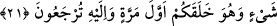

yetmiyor mu?” deyince, – “Ya Rabbi, sen bana haksızlık etmeyeceğini söyledin; bu
sebeple, kendimden başkasının şâhidliğini kabul etmem” demeye devam eder.
Bunun üzerine Allah kulunun ağzını mühürler ve kulun bütün yaptıklarını kendi
organları anlatır. Bunu gören kul da: – “Defolun gidin!... Yazıklar olsun size!.. Ben
(sizin için) cedelleşiyordum!” demeye başlar.[37]
Bu rivâyet, “cild”lerden maksadın organlar olduğuna açıklık getirmektedir.
Burada, cansız maddelerin âhirette konuşan canlılara dönüşeceğine dâir bir işaret
vardır. Nitekim bir âyette: “kuşkusuz gerçek hayat âhiret yurdudur.” (el-Ankebût
29/64) buyrulur.
21. Derilerine: Niçin aleyhimize şâhidlik ettiniz? derler. Onlar da: Her şeyi
konuşturan Allah, bizi de konuşturdu. İlk defa sizi o yaratmıştır. Yine O’na
döndürülüyorsunuz, derler.
Kınamak maksadıyla “derilerine: “Niçin aleyhimizde şâhidlik ettiniz?” derler.”
Gerek burada gerekse () “Bizi, … Allah konuşturdu” ifâdesinde derilere hitâb
edilirken akıl sâhiplerine âid zamirlerin kullanılması, söz konusu hitâbın -her ikisi de
akıl sahiplerine özgü olan- soru sorma ve cevap verme bağlamında olmasından
kaynaklanmıştır. Sadece derilerden söz edilmesi de muhtemelen diğer organların aksine
insanların görünür kısımları olmasından; ya da bir derinin şahidliğinin çok daha ilginç
ve aklen daha uzak olmasındandır. Çünkü kulak ve gözün aksine derilerin idrâk özelliği
yoktur. Yani, şahidlik için gerekli olan idrak görme ve işitmedir; zîrâ şâhidlik ancak
görmek ya da işitmekle yapılır. Dokunuş idrâkinin şâhidlikte hiçbir etkisi yoktur.
Dolayısıyla derinin şâhidliği daha ilginç ve aklen daha uzaktır.
İbn Abbas’ın (r.a.) “derilerin şâhidliğinden maksad, cinsel organların şâhidliğidir”
dediği rivâyet edilmiştir; çünkü bunlar da cild kapsamındadır. Ancak Cenâb-ı Hak, hayâ
sahibi olduğu için kinâye yapmaktadır. Bu, “derilerine ‘Niçin aleyhimizde şâhidlik
ettiniz?’ çünkü bizim şâhidlik ettiğimiz zinâ, -gözlerin ve kulakların şâhidlik edeceği
günahlara ve bu ikisi aracılığıyla işlenenlere göre- daha büyük, daha çirkin,
cezalandırılmayı ve rezil edilmeyi daha fazla gerektiren bir suçtur; ‘derler’ âyetinde
sorunun özellikle bunlara sorulmuş olmasına daha uygun düşer.
“Onlar da:” Konuşma kapasitesi olan “her şeyi konuşturan Allah, bizi de
konuşturdu.” Bize gerçekleri açıklama gücü verdi; biz de bizim aracılığımızla yapmış
olduğunuz kabâhatler için aleyhinizde şâhidlik ettik, bunları gizlemedik.
Burada Yüce Allah’ın kudreti açısından ruhlarla cisimlerin aynı olduğuna işâret
edilmektedir; dilediği takdirde, ruhları sağır, kör ve dilsiz cisimlere; cisimleri de